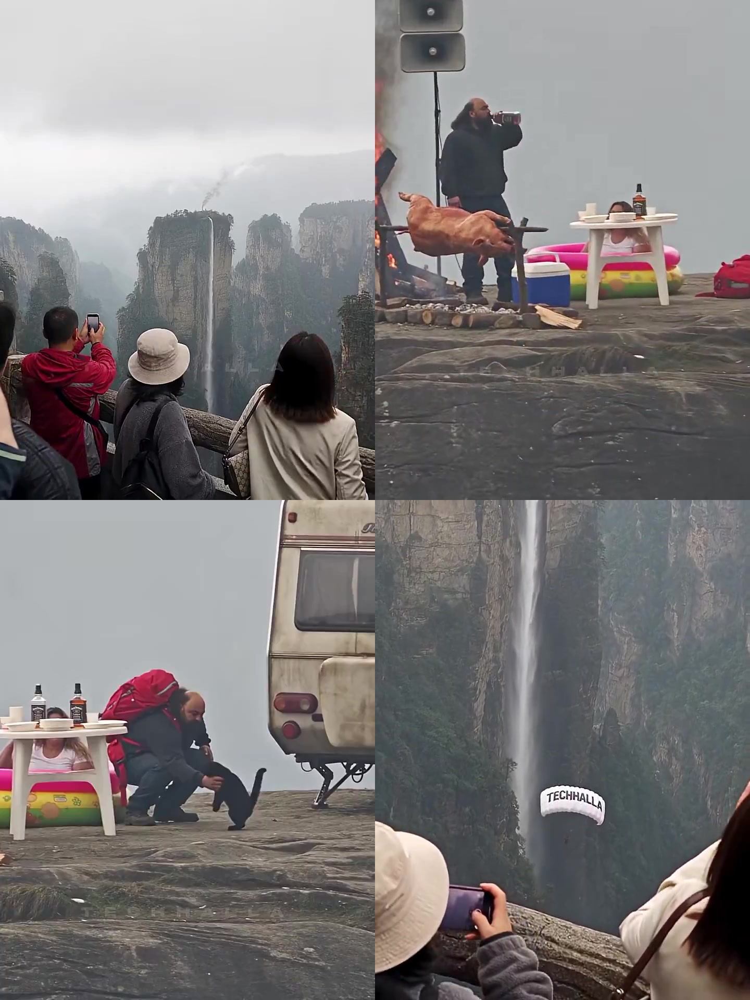

疲惫 被惦记
收摊后，最后一碗热汤推向你
工作袖口、空下来的街道、仍为你亮着的摊灯，让一次关照发生在能够认同的生活里。
想验证：能否感到自己被注意、被照顾？
AI 短视频 · 创作研究
疲惫时被惦记，压抑时感到自由，疏离时有人靠近，好奇时发现意料之外的世界。
我们研究怎样让人物的吸引力与主动回应、有限而有创意的视角，以及可信的世界，共同承载这些渴望，形成代入、期待与兴奋。
从四种效果理解这件事
图中是原创 AI 静态效果设想，用来讨论场景与人物关系；实际的视频节奏和情绪吸引力仍需观看验证。
效果与理解
日常指熟悉的情绪经验。场景可以普通，也可以罕见；人物的一个具体动作，让画面与“我”发生关系。
疲惫 被惦记
工作袖口、空下来的街道、仍为你亮着的摊灯，让一次关照发生在能够认同的生活里。
想验证：能否感到自己被注意、被照顾？
压抑 自由
工作围裙留在门内，她把另一副雪镜递给你。空间的打开和参与的邀请，共同放大自由感。
想验证：是否想跟她跨过这道门？
疏离 心动
通勤环境保持普通，亲密来自主动靠近。伞的位置、身体距离和眼神，承载被选择的感受。
想验证：一个小动作能否让人想停留？
好奇 惊叹
潜伴的目光与手势把注意力引向相机盲区。观众等待发现，真实的自然尺度带来惊叹。
想验证：视角能否让人主动等待下一秒？
创作工作模型
日常情绪 → 内心渴望 → 人物行动 → 视角揭示 → 情绪变化
情绪可以加深、悬置或释放；每条作品按自己的力度与节奏发展。研究价值
AI 让难以恰好遇见或拍到的体验变得可见。我们的工作，是明确它为何值得被经历，再把这种价值落实到人物、镜头和反馈。
先问谁正疲惫、孤独、受拘束或充满好奇，他此刻渴望什么。由此选择人物、关系和场景。
用递来、等待、靠近、邀请或示意回头，让渴望通过可见动作出现；用拍摄者身份、距离和盲区组织期待。
记录哪一秒开始在意、为何继续看、哪里失去兴趣。将情绪反馈与真实感、动作连续性分别检查，决定下一次改什么。
当前积累的是创作方法、效果设想与失败经验。持续吸引力、稳定复用和实际制作收益仍待验证。
研究从哪里开始

游客视角从远处孤峰逐渐看清山顶房车、烧烤与泳池，随后人物抱猫跃下、降落伞打开。
我们的理解是：可信的观看位置先建立代入，人物与自由生活承载向往，逐渐升级的发现让人继续等待。真实与 AI 之间的犹疑，可以与欲望、紧张和兴奋同时存在。
这是基于已有画面与来源的创作解读；原片具体制作模型、完整提示词和生成次数尚未独立核实。
实际小样与修正
海洞里的空座位先做了动作试镜，再补回配送与生日转折。用户的两次反馈，让研究重心回到情绪与欲望本身。
我们由此修正的判断
先找到观众会在意的处境和瞬间，再决定怎样组织情节、人物与镜头。完成动作和补齐故事，分别提供阶段证据；情绪吸引力由实际观看反馈检验。
小样为原创虚构 AI 视频。网页播放版保留画幅、时长和原声，压缩码率以便加载；原始制作文件本地保留。已完成技术与抽帧检查，完整人工听验尚未完成。两次反馈仅代表本轮观看者的意见。可继续使用的研究资产
缆车与雪道、海洞邀请、潜水盲区、婚礼驾驶、夜宵收摊、观察屋外的动物。每条保留人物、观看身份、现实连接、情绪意图与三联氛围图，共18个概念画面。